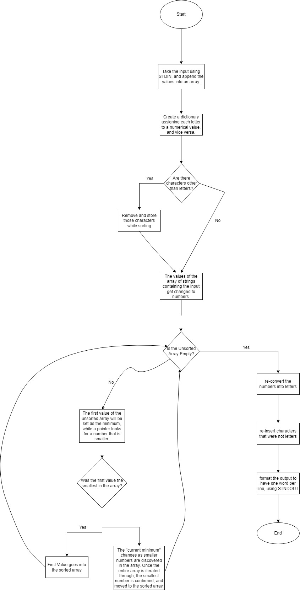

Optimal Sorting
Vijay Vemulapalli
Vivek Maranganti
Evan Ye
Stefano Giron
Optimal Sorting Part II Spreadsheet and Chart
GitHub Repository
Optimal Spreadsheet

My graph is about the amount of time it takes for the sorting algorithms such as bubble sort, insertion sort, and selection sort, to sort words. Based on the data from the graph, I can conclude that it takes the longest time for words to be sorted for Bubble Sort and Selection Sort, with about 300,000 ms for each trial, finding ordered, reverse, and random. For Insertion Sort, most of the time it takes maximizes around the 200,000 ms mark. Meaning that it took the lowest amount of time for the words to be sorted. For Sorting 1 and 10 words, all of the sorting, including ordered, reversed, and random were all around the same range from 1-10 ms with the exception of InsertionSort, which was around 30-40 ms. For 100 words, the time was around the 10-20 ms, and sometimes in the 20s mark for Bubble and Selection sort for all 3 types. Insertion Sort reversed was the fastest, with 4 ms on each trial, and 20-30ms for ordered and random. For 1000 words, the range for Bubble Sort and Selection Sort was 10-20, but the time for Insertion Sort varied, where order was from 30-40 ms, 19 for reversed, and 10-40 for random. Insertion Sort for all 3 types were all very quick when compared to Bubble Sort and Selection sort, as they were in the 700's to 1000's ms. For 10,000 words, Bubble Sort and Selection sort for all 3 types varied extremely, where the range was from 75,000 to 150,000 ms. Insertion Sort was the fastest again, within the 700s for ordered, and 1500-2000 ms for reversed and random. For 100000 words, Bubble sort and Selection Sort for all 3 types were around the 300,000 ms mark. For Insertion Sort, the reverse was from 250,000 to 350,000 ms, around 150,000 for random, and the lowest time was ordered, with 30,000 to 60,000 ms.